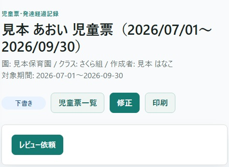
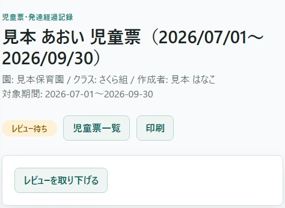
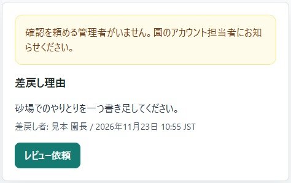
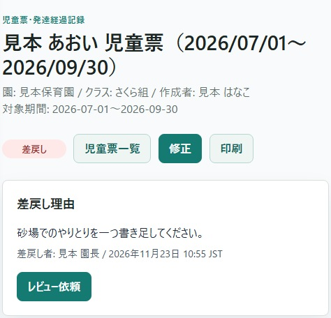

入力画面で保存したら「詳細・承認へ」を押します。開いた画面で、お子さんの名前、対象期間、その下にある本文を読み返します。
直したいときは「修正」を押します。内容がよければ、画面上部の「レビュー依頼」を押します。宛先を選ぶ操作はありません。
書いた児童票を園の管理者に読んでもらうときは、「レビュー依頼」を押します。依頼したあとは、同じ画面で返事を確認できます。

入力画面で保存したら「詳細・承認へ」を押します。開いた画面で、お子さんの名前、対象期間、その下にある本文を読み返します。
直したいときは「修正」を押します。内容がよければ、画面上部の「レビュー依頼」を押します。宛先を選ぶ操作はありません。

児童票の状態が「レビュー待ち」に変われば、依頼の操作は完了です。管理者の確認が終わると「承認済み」、書き直しが必要なときは「差戻し」と表示されます。
いったん画面を閉じたときは、「児童票作成状況」で園児と期間を確かめ、その行の「開く」を押すと、レビュー中の内容を読めます。

書いた内容は残っています。園のアカウント担当者に知らせてください。設定が済んだら、この児童票を開き、もう一度「レビュー依頼」を押します。
「レビュー待ち」の間に「レビューを取り下げる」を押すと、「下書き」に戻ります。「修正」で書き足して保存し、もう一度「レビュー依頼」を押してください。

「差戻し理由」を読みます。見本では、砂場でのやりとりを一つ書き足すよう頼まれています。
「修正」を押して書き直し、「下書きを保存」を押します。「詳細・承認へ」で戻り、直した内容を確かめてから、もう一度「レビュー依頼」を押します。
画面の人物・記録はすべて架空です。実際の入力や依頼は園のアプリで行います。2026年11月23日に保存済み配備版と照合した確認原稿です。